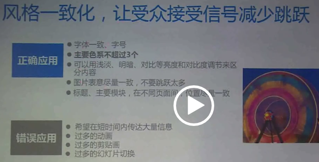

介绍
[### 技术相关]
编码注意事项
linux命令
snippet-js
snippet-python
知识点-css
知识点-js
知识点-nodejs
知识点-php
知识点-html
知识点-react
知识点-redux
知识点-chrome extension
VUE项目实践
互联网广告
技术其他
做好ppt的方法
用户体验相关
[### 个人思考相关]
思考方式
learning about learning
形而上学
哲学
名言警句
乐理知识学习汇总
面试官培训
今生今世的证据
日常其他
[### 文章]
文章-2017总结
文章-2015总结
文章-cookie
文章-毕业旅行
文章-nginx
文章-尺寸单位
文章-租房
文章-冲绳
文章-约旦迪拜行
letter_to_gf
Published with GitBook
做好ppt的方法
做好ppt的方法
做好 PPT 的方法

results matching "
"
No results matching "
"